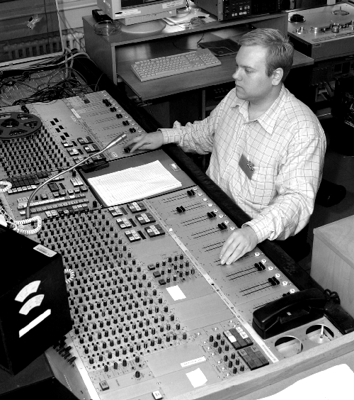
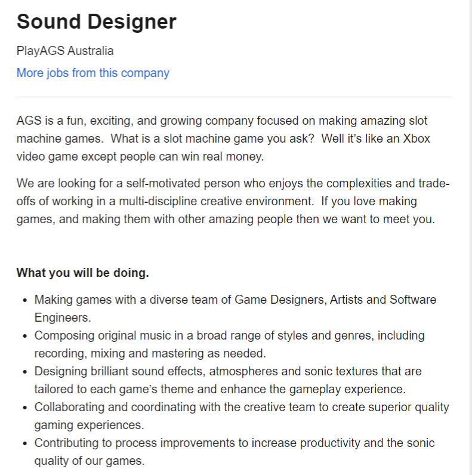
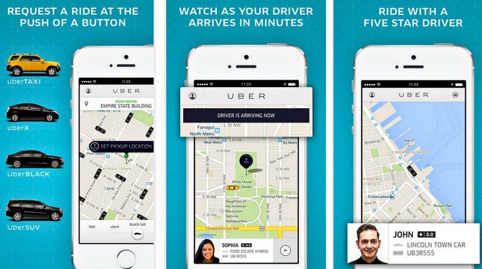

S3871505@student.rmit.edu.au
I have had many nicknames over the years, but I prefer to go by Alex. I was born in Alice Springs NT, and moved to Brisbane when I was 6 years old. I have lived in Australia all my life but have developed a massive interest in travel. I have had a few trips exploring Europe, but still need to see more of the world. I have worked in the hospitality industry for over 10 years now, doing everything from housekeeping and bartending, to functions supervising and restaurant management. My last job was a night manager position for 2 years at a large backpacker’s hostel with bar attached. I have been playing guitar and other instruments since I started high school and even studied an Audio Engineering and Sound Production course a while back.
My interest in IT started early, playing video games for as long as I can remember, as a teenager I started playing music; fiddling with instruments and recording programs, and since leaving school I have been working in the hospitality industry. I have tried many times to find work outside of hospitality, looking for something to pique my interest. I have noticed over many different fields of work, that IT is especially important. I decided to learn more about IT, in the hopes of expanding my knowledge enough to help in whatever field I eventually choose to work in. I believe an Intro to IT is the perfect steppingstone on to brilliant things.
While I still have not decided what I want to do as a career, I have a list of potential aspirations. I have quite a history in music and music production, as IT is a rather large part of the music industry now, this would be the perfect course to start things off. I have also thought about working in cyber security (after chatting with a friend already doing that kind of work, it sounded remarkably interesting).
One thing I love about IT is how it forms communities of people; it helps bring everyone together. There are countless different forms of social media and information that people are happily sharing with the rest of us, making life friendlier and easier.

After deciding I would like to learn more about IT, I did some research into potential universities and short courses, reading reviews and articles. I found RMIT and learnt how friendly and engaged the team is with their students, and I knew this was the perfect place for me to start my studies. RMIT has proven to be one of the most supporting universities I have come across, and I am glad I chose to study with them.
I have worked in many different fields over the years, like hospitality, gardening and landscaping, teaching music and I even worked in a bank temporarily. After exploring many different options, I am still searching for the right career for me. One big interest for me is music. I learnt to play a few instruments during and after school, and even studied an audio engineering and sound production course. During that time, I did a little work in the field; recording, mixing and mastering music and helped with advertising and publicity for some small local artists. While helping a certain artist with his social media presence, I realised how useful skills in IT would be. I unfortunately did not finish studying the Audio Engineering course due to working too many hours at the time, but I do wish to pursue it further.
An Audio Engineer is a trained professional who works with the mechanics of recording, mixing and reproducing sound. They can work in many different areas from recording and mixing music in studios, handling the technical aspects and sound levels of live gigs/festivals, and even audio design and production for video games and movies.
I have developed an interest in audio engineering ever since I could pick up a guitar. As much as I wanted to play music, I also loved the idea of sharing music, which got me on the idea of recording and mixing. After learning a lot about music in school, and many years of random experiences since, I found that audio engineering encompasses a lot of my biggest interest, like music (live and mixed) and video games.
A great way to get started working in the field is hands-on experience. Watching sound engineer’s work; go to a live gig somewhere or have a chat with a DJ, ask them about their experiences and different things they have learnt. I have made friends with many DJ’s, musicians, and audio engineers, and have been given opportunities to handle and explore some equipment and ask questions. Hands-on experience in the field is a great bonus, even if it means interning for free at a small studio. While learning about the equipment and getting experience in the field is important, getting a degree will help to secure a more substantial career. A conventional degree might be an Associate’s or Bachelor of Science in Audio Engineering, or Audio Engineering and Sound Production. These courses usually consist classes in music, business and technical classes that give you a broad education in the field.
I believe my next course of action is to enrol in an Audio Engineering and Sound Production course and receive a Bachelor within 3 years (or 4 if I work and take less classes). I will also search for some work in the field, whether it is recording music for local bands or interning for a tech crew at gigs and festivals. One job I found interesting is a Sound Engineer position for a company that works in development, manufacturing and suppling of games, systems and technology. This ad is primarily for casino-based games, but I plan to keep looking for similar jobs focused on video games.
https://www.seek.com.au/job/50548474
The Myers-Briggs test on 16personalities found me to be a Campaigner (ENFP-A). This shows that I am 60% extroverted, 56% intuitive, 56% feeling, 60% prospecting and 51% assertive.
The Campaigner personality seems to be a free spirit. As described in the test results, a Campaigner can often be the life of a party but is more interested in the social and emotional connections they make with people, rather than the sheer excitement of the moment. I believe for me; this test shows that while I can sometimes be quiet and reserved, thinking more with my heart than my brain, I can still be quite confident, calm and collect in many situations. This can be a beneficial trait for creating and working in teams, as I can find it easy to empathize with others it is easy for me to get to know people on a personal level, making it easier to connect and express ideas and solutions between each other.
Having the ability to be calm and collect in many situations can help with balancing workload and responsibilities within a group. Other useful traits are curiosity and observance, having the courage to ask questions and put things together solving problems. Excellent communication skills are always important in group projects and having the ability to be relaxed and friendly can ease the stress for everyone involved. Downsides to the Campaigner personality can be finding it difficult to focus, being easily distracted or overthink things too much. I can also sometimes start working independently, drawing focus away from the group.
The Learning Styles Test through Emtrain.eu indicated that I am mostly a Reflector and an Activist.
Emtrain describes Reflectors as those who tend to be more cautious who prefer to stand back and observe. They take the time to collect and interpret information to help them reach their goals. Reflectors usually look at the big picture by gathering information from previous experience as well as current study. With working in groups, Reflectors work best with paired discussions and demonstrations. I believe this is quite accurate, as I do tend to be more cautious and take the time to observe while collecting information. For me to work effectively in a group, I would benefit the most from one-on-one discussions with group members and learn best by seeing other people’s work and projects as examples. Downsides to being a Reflector for me can be that I may sometimes sit back and observe for too long, or miss a bit of information while thinking about the big picture.
Activists are shown to immerse themselves fully in new experiences, and tend to be open-minded and enthusiastic. According to the Learning Styles Test Activists often strive to be the centre of attention in activities. For the Activist, working in groups is best handled with brainstorming and regular group discussions. While I agree with being open-minded and enthusiastic, it is usually rare for me to seek attention. I certainly benefit from group discussions, and all I need to do to form an effective group is start a discussion and show enthusiasm and confidence. While proactive and open-minded, Activists like myself can sometimes move off-track and easily distract themselves and other group members.
The Leadership Style Quiz by the University of Southern California states that I am a Postmodern Leader.
A Postmodern Leader is someone who understands that leadership requires both logic and creativity. They see true human potential, and the role of a leader can be enjoyable. The Postmodern Leadership style is a valuable commodity for improving possible career outcomes. When forming and working in a group, the confidence of a leader and aspiration to help others can be very beneficial. One problem with a Postmodern Leader working in groups is ego. Sometimes I can feel the need to be the one in control, or even sometimes dismiss other opinions.
The project idea I have come up with is a an app much like Uber or Didi (or even just an extra feature that could be added to Uber), where you can also order ute’s and other service vehicles. The app would require two parts, one for customers and one for drivers. Much like Uber, people could order a vehicle driven by a local, but instead of just a car to drive people from A to B, they could also order Ute’s or small trucks to help with certain errands.
I first came up with this idea a while back when I was borrowing my father’s ute, I had a lot of spare time and not much money. I had a friend ask me to help him pick up a couch and he offered to pay me for the effort. Afterwards I put a post up on Facebook letting my friends know that I had a ute and was happy to drive around and help people moving to a new house or pick up furniture etc. I had a chat with my father about it, and we realised just how many people would benefit from easy access to utility vehicles, and we came up with the idea of starting a ‘Uber-Utes’ type of app.
‘Uber-Utes’ (title still under consideration) would allow people to easily order someone with a ute or truck to come and help move stuff, whether it’s picking up a fridge from a store or taking old junk to the dump. Even if people want to move to a new house, a casual driver with a ute could be a lot cheaper and easier to organise than hiring your own trucks or paying moving companies.
Much like Uber or Didi, this app would require two components to it, or even 2 apps: one for the driver and one for the passenger. These apps would have a few features such as geolocation and routing, payment integration, registration and personal data management, and a decent easy-to-use UI and UX design. The driver’s component would also have other features such as driver reports, active/inactive status’ and the ability to contact the passengers.
The app will need simplicity and clarity, an interactive User Interface that is easy to navigate and displays information properly. Access to the app would be simple, by making a registration using your email address, or even link it to Facebook or Google accounts, and can be used on devices such as smart phones and computers. For both passenger and driver components it could be a map with your location data, with options such as profile/payment management, trip history, possible promotions/deals and general information about the app and its development.

The app design would end up looking very similar to the Uber or Didi UIs.
Tools and technologies used to create an app like ‘Uber-Utes’ can be quite basic. One large part of the app is the map. Maps SDK for iOS can be used to add maps to applications based on Google Maps data. The SDK automatically handles access to the Google Maps servers, response to gestures like clicks and drags, and map display. Markers and info windows can also be added to the map, and Geolocation API can be used to get a user’s exact location data. To begin with, apps like Uber are primarily written in Python, Node. js, Go, and Java. Java, as well as Objective-c is used for the iPhone and Android apps. The skills and costs required to create an app like this do not need to be outstanding. Developing an app like Uber is dependent on the cost of building an MVP, product development and acquisition, economics and marketing, and the constant cost of updating and improving your app’s analytic capabilities. Someone with decent coding knowledge and access to some basic computer software could start the development of an app like this quite easily.
Have you ever had to vacate a house at late notice, or even bought a TV that cannot fit in your car? This service is for those who need a little extra hand. The outcome for this app would be to ease some of the stress some people can have when it comes to moving to a new house or buying appliances etc. Uber has provided countless people with easy and convenient transport; the only downside is that there is only room for people or food. With ‘Uber-Utes’ (title still under consideration) customers can not only order rides to and from places, but they can also use the service to move large objects that would not fit in a normal car. The app would be simple, easy to use and aesthetically pleasing to the eye. Ordering a ute like an Uber would be much simpler, cheaper and quicker than hiring a ute or a truck, and the convenience of having another person driving can be appealing to a lot of people.
Career Explorer by Sokanu “Audio Engineer” - Sokanu Interactive Inc. 2020 - Viewed Online; https://www.careerexplorer.com/careers/audio-engineer/ Accessed Sep.12 2020
Audio Engineering jobs in all Australia – Seek.com – Viewed Online; https://www.seek.com.au/audio-engineering-jobs Accessed Sep.12 2020
16Personalities “Myers-Briggs personality test” - Viewed Online; https://www.16personalities.com/ Accessed Sep.12 2020
Emtrain “Learning Styles Quiz” - Viewed Online; http://www.emtrain.eu/learning-styles/ Accessed Sep.12 2020
University of Southern California “Leadership Style Quiz” - Viewed Online; https://eml.usc.edu/leadership-style-quiz Accessed Sep.12 2020
OctoDev 2017 “How Uber was made” – Kateryna Bozhenko 2018 – Viewed Online; https://octodev.net/how-uber-was-made/ Accessed Sep.13 2020
One Month, Columbia University “10 famous websites built using Python” – Chris Castiglione Jan. 2020 – Viewed Online; https://learn.onemonth.com/10-famous-websites-built-using-python/ Accessed Sep.13 2020
Google “Google Maps Platform” – Updated Sep. 2020 – Viewed Online; https://developers.google.com/maps/documentation/ios-sdk/overview Accessed Sep.16 2020
Cleveroad “How to create an app like Uber” – Nataliya Kh. Dec. 2018 – Viewed Online; https://www.cleveroad.com/blog/estimation-checklist-how-much-does-it-cost-to-develop-an-app-like-uber Accessed Sep.16 2020
2020 Uber Technologies Inc. “Uber” – Last modified Dec.12 2019 – Viewed Online; https://www.uber.com/au/en/ Accessed Sep.17 2020